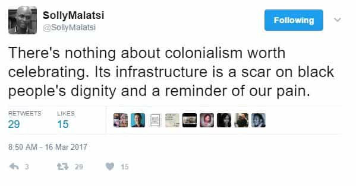

A coloured South African, and student of the ancient near east.


It may seem a characteristic of modern times, but not all of our experiences as historical beings needs to be reduced to a good guy bad guy narrative. Facts can be accepted for what they are, without the intention to profit from their ideological utility. On 16 March 2017, Hellen Zille, a white South African politician, publicly shared her personal opinion on colonization.
According to local media, Black South Africans were offended by the protean politician’s myopic inner thoughts. It’s difficult not to acknowledge her opinion as fact based. Those migrants who left Europe to find a new home in Africa didn’t coincidentally arrive at the exact time indigenous people were about to start building modern urban infrastructure. They brought that aspect of their culture with them.
But it’s not the apparent positives of that fact that has, by consensus, offended our majority. It’s the ideological implication of that cultural enrichment. That is, we would have to accept that the big bad white man made a positive contribution to black cultural identity and dignity.

I’m not going to consider the beneficence of facts for any agenda. I will however elucidate the most significant cultural contribution European migration made to human dignity.
Archaeology confirms that there were farmers, states and civilizations in Africa before colonization. In southern Africa we had Mapungubwe and Great Zimbabwe. In West Africa there was Jenne-Jeno and Kuombi Saleh. In East Africa, Manda and Kilwa. In the North there was ancient Egypt and in the Northeast Kush, Meroe and Aksum. All were complex and well organized urban centers to be proud of. But since we are inclined to manipulate historical facts for ideological benefit, Egypt took pride of place.
A while back, the Black Athena Hypothesis provided a new story about ancient Egypt. Basically it contended that black Africa inspired the development of the state, and by extension, the whole of Western civilization. This hypothesis along with its derivative ideas, movements and memes doesn’t even attempt to conceal prejudice in an argument and blatantly stereotyped European societies as cultural appropriators. But despite obvious historical flaws, it continues to provide a cultural identity that anyone of black African descent can be proud of.
African dignity for sale.
The fundamental contribution that Egypt makes to African dignity is its long tradition of intellectual inquiry. It proves that long before the Greeks and Romans, Africa had already progressed beyond a primitive lifestyle. With the contention that white European thinkers may have been influenced by an African intellectual tradition, the cultural appropriation stereotype is validated and manifests as political gold for the Afrocentric will to power.
If one were to hold ancient Egypt as the crown jewel of African pride we must acknowledge a few idiosyncrasies. Egyptian civilization was an indigenous development restricted to the confines of the Nile valley. There is very little reason to believe they were anything other than of Mediterranean stock.
They did have occasional contact with black African Kingdoms but, as evidenced by the chronology of those sites, contact was late and mostly commercial. Their conservative intellect also did not produce much regarding speculations on nature and the universe. So despite their 3000-year history they had an imagination that was ossified in a rigid universe.
A static universe arranged according to personal desires and moral ideals.
Rigid orthodoxy meant that Egyptian — and by extension, early African thought — was enslaved by religious, economic and political dogma for thousands of years before the arrival of Europeans. Clever and prosperous as they were, early African societies just could not break out of the intellectual inhibitions their enchanted worldview had created.
For instance, if the ancient African erudite were presented with a mathematical problem when building, he would refer to previously documented rules of thumb for solutions. Over millennia, theoretical generalizations for universal application never occurred to them.
European societies didn’t invent the ideas and cultural patterns on which civilization is built. They developed a taste for these from the ancient near east with a major contribution from Egypt. But they were also not limited to appropriation or subjugation. In fact, they are responsible for the opposite. They invented intellectual freedom.
Releasing the mind from rigid orthodoxy.
Afrocentrists are eager to declare that Thales of Melitus was influenced by Egyptian priests — the intellectuals of their culture. This is not improbable as he is thought to have traveled and visited Egypt. Consequently, one could make the case that the Milesian school was created by Egyptian contact with the Greek mind.
However, the ideas about the universe from the Milesian school show very little intrusion of anthropomorphic desires and moral ideas, two elements that characterized Egyptian thought. That is to say, the Milesian thinkers were the first to attempt to disenchant the natural world. There is no evidence of this tendency in pre-Greek influenced Egyptian speculations and they certainly were not just about to invent it when Thales showed up.
For the first scientific hypotheses and the subsequent evolution of philosophy to have come from the Greek mind rather than Egyptian is not unusual. Unlike the Egyptians, Greeks conceived of capricious gods. The random blessing and cursing would have created the need to intellectually empower humanity against such a volatile status-quo. The settled, stable and mystically manipulated supernatural universe of the African state provided no stimulus to release humanity from the comforts of orthodoxy.
The European contribution to African dignity was much more impactful than colonialism, and cannot be exaggerated enough. It was a contribution to humanity. It was freedom from the shackles of dogma and propaganda. This intellectual freedom gave us the ability to think about our world beyond the limits of learned responses. It provided the opportunity to solve old problems with new solutions and the possibility to be factual and rational when we are emotionally inclined to be offended.
Scarred or enriched?We won’t know until we open our eyes.
African identity and dignity was formed by multiple contributors. When we consider the European contribution to be a scar, it has to be deep, one that has inextricably linked us to the complete human experience through a mechanistic universe which ultimately provided the social media platforms we now have to express our modern self-centered opinions.
Read More: Black Or African-American?